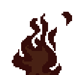

Zovem se Dorotea Trbić i živim u Novom Čiču. Završila sam srednju Elektotehničku školu Zagreb te sam upisala Grafički fakultet; smjer: Multimedija i vizualne komunikacije.U srednjoj školu sudjelovala sam na brojnim smotrama i izložbama poput: Božičnog sajma, Dojdi osmaš, Inova mladih... Na Božićnom sajmu su također bili objavljeni svi moji crteži te sam nastupala sa školskim bendom Suhi Duhi. Također, bila sam među 4 izabranika za izradu web stranice za Elektotehničku školu Zagreb, međutim zbog CARNET-ovih pravila projekt se nije realizirao. Volim crtati, slikati, pjevati te u slobodno vrijeme radim nokte i ,kada nemam nokte, sviram gitaru.